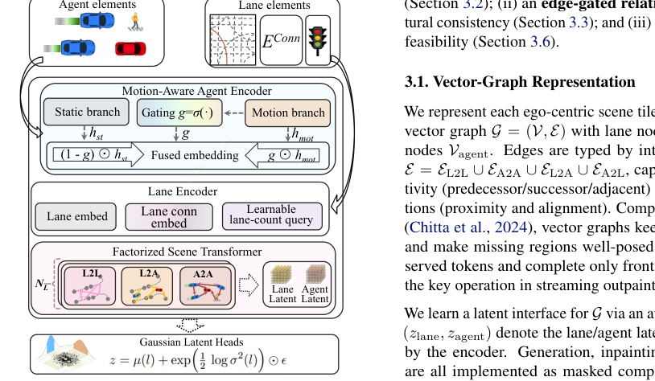
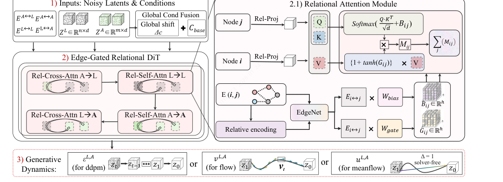
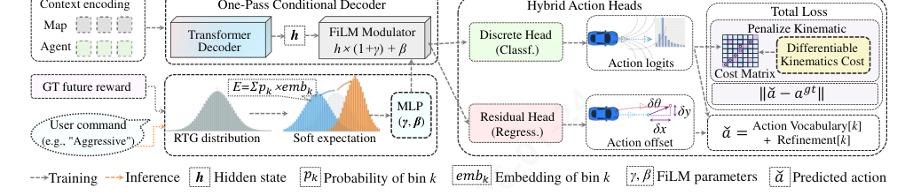
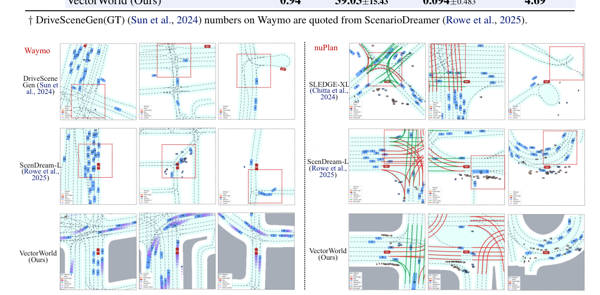
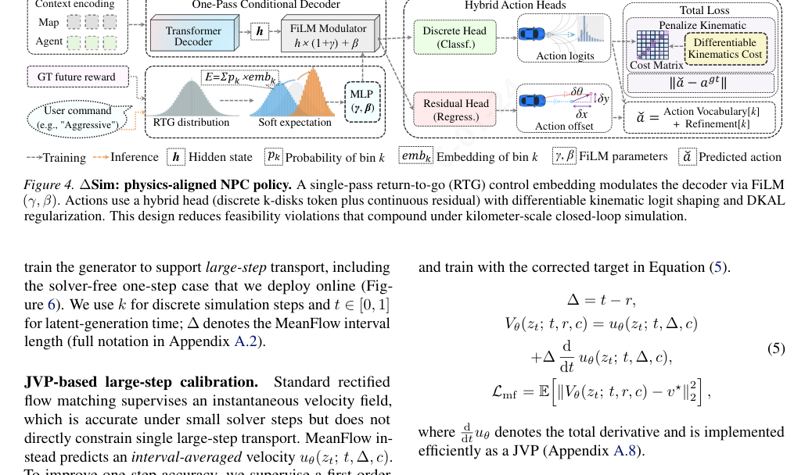

VectorWorld
简单摘要
这篇工作的落点不是只改进一个局部模块，而是围绕完整任务链路重新组织系统设计。作者首先回答“为什么这个问题值得做”，接着说明现有方案为什么不足，最后再解释自己的方法如何把表示、训练和推理串成一条更可行的路径。
按照论文摘要的原意，这篇工作最关键的信息可以概括为：自动驾驶策略的闭环评估需要日志重播之外的交互式模拟。然而，现有的生成世界模型经常在闭环中退化，原因是（i）与策略输入不匹配的无历史初始化，（ii）违反实时预算的多步采样延迟，以及（iii）在长期范围内复合运动学不可行性。我们提出了 VectorWorld，这是一种流世界模型，可在推出期间增量生成以自我为中心的车道 - 代理矢量图图块。 VectorWorld 通过运动感知门控 VAE 生成策略兼容的交互状态，从而使初始化与历史条件策略保持一致。它通过无求解器的一步掩码完成以及使用间隔条件 MeanFlow 和基于…
如果把它放在更大的技术脉络里理解，这篇论文可以视为“问题定义 → 方法设计 → 优化训练 → 实验验证”的完整闭环，而不是只给出一个孤立技巧。这样的工作更适合被写成博客精读，因为它的价值不在某一行代码，而在整条设计链路为什么成立。


自动驾驶策略的闭环评估需要日志重播之外的交互式模拟。然而，现有的生成世界模型经常在闭环中退化，原因是（i）与策略输入不匹配的无历史初始化，（ii）违反实时预算的多步采样延迟，以及（iii）在长期范围内复合运动学不可行性。我们提出了 VectorWorld，这是一种流世界模型，可在推出期间增量生成以自我为中心的车道 - 代理矢量图图块。 VectorWorld 通过运动感知门控 VAE 生成策略兼容的交互状态，从而使初始化与历史条件策略保持一致。它通过无求解器的一步掩码完成以及使用间隔条件 MeanFlow 和基于 JVP 的大步监督训练的边缘门控关系 DiT 来实现实时绘制。为了稳定长期部署，我们引入了 Sim，这是一种物理对齐的非自我 (NPC) 策略，具有混合离散-连续动作和可微的运动学 logit 整形。在 Waymo 开放运动和 nuPlan 上，VectorWorld 提高了地图结构保真度和初始化有效性，并支持稳定、实时的闭环部署 (https://github.com/jianchaokang/VectorWorldcode)。
核心创新
对照引言与方法部分可以看出，这篇论文的创新点并不只是“做了一个新模块”，而是重新组织了问题的求解顺序与约束方式。作者更关心的是如何把任务定义、表示设计、训练目标和实验验证压到同一条主线上。
1）从任务设定上重新界定问题边界
作者首先重述了任务本身：到底什么才是这个问题里真正重要、且现有方法长期处理不好的部分。只有把问题边界说清楚，后续的新结构与新损失才有意义。
2）用统一框架串起表示、推理和优化
从原文来看，作者并不是把很多模块松散拼在一起，而是在一个统一框架中安排中间表示、关键网络和训练目标，使它们彼此约束、彼此服务。这类设计通常决定了方法是否真的具备可复现与可落地性。
3）把实验目标直接对齐到实际痛点
论文中的实验不只是追求一个漂亮数字，而是尽量把评价方式对齐到真实使用情境，例如质量、稳定性、可控性、几何一致性或长尾场景下的可用性。这样实验结论才真正能支撑方法设计本身。
自动驾驶策略的闭环评估和训练需要超越记录日志的交互式模拟。一旦记录的上下文结束，日志重放既不能回答反事实查询，也不能扩展范围。尽管生成世界模型可以合成不同的车道代理场景，但将它们部署为在线模拟器后端会引入标准开环指标无法捕获的约束（初始化、延迟和长期稳定性）。我们确定了主导闭环仿真但在标准开环指标中反映较弱的三个部署约束。首先，无历史初始化：许多生成器在 \(t=0\) 处输出静态快照，而反应策略则以短运动历史为条件，从而引发冷启动瞬态（例如，冲击尖峰）和不稳定的早期交互。其次，采样延迟：基于扩散的求解器需要许多去噪步骤来生成结构化车道代理图，这与实时预算下的流式绘制不兼容。第三，长期可行性：微小的每步运动学违规虽然在短期指标中可以忽略不计，但通过复合漂移累积超过公里级的推出。为了解决这些限制，我们提出了 \（图），一个基于矢量图表示的流世界模型。对于初始化，我们引入...
技术细节
方法部分是理解论文价值的核心。阅读这类论文时，最重要的不是背结论，而是看清楚：输入是什么，中间表示是什么，关键模块如何传递信息，损失或奖励又如何把模型推向作者想要的解。
3.1 方法主线与模块组织
从方法章节来看，作者首先构建了一个核心表示或条件变量，再通过若干模块逐步把它变成最终输出。这种设计的优势在于：每个模块都有明确职责，既便于解释，也方便在实验中做消融分析。
闭环流式配方。我们将流模拟制定为动态矢量图上的滑动窗口生成任务。在模拟步骤 ，系统为每个代理维护一个以自我为中心的本地图块和一个 \ 。自我规划者和我们的反应性 NPC 政策（第 1 节）会根据这种状态起作用。为了在没有预生成的情况下维持公里级的推出，当自我接近图块边界时，我们触发了outpainting：系统通过 编码当前状态，并通过无求解器的 MeanFlow 生成器生成前沿（第 1 节）。该管道依赖于三个耦合创新来确保一致性和速度：（i）用于历史对齐初始化（第 1 节）； (ii) 结构一致性（第 3 节）； (iii) 运动学可行性（第 1 节）。矢量图表示 我们将每个以自我为中心的场景图块表示为异构矢量图 \(G=(V,E)\)，其中包含车道节点 \(V_lane\) 和代理节点 \(V_agent\)。边通过交互语义来键入：\(E=E_L2LE_A2AE_L2AE_A2L\)，捕获车道连接性（前驱/后继/相邻）和车道-代理关系（邻近和对齐）。与光栅化相比，矢量图保持拓扑明确并使缺失区域适定：我们可以限制观察到的标记并仅完成边界标记，这是流式绘制中的关键操作。我们通过自动编码器学习 \(G\) 的潜在接口。令 \(z=(z_lane, z_agent)\) 表示编码器生成的通道/代理潜在令牌。生成、修复和修复都在这个潜在空间中作为屏蔽完成来实现，使得单个生成器能够服务于初始化（\(t=0\)）和推出时修复。交互状态界面动机：历史条件策略。闭环行为策略（包括许多自我规划者和 NPC 模型）是受历史条件限制的，因为意图推断取决于最近的速度和曲率趋势。因此，初始化时的无历史快照会导致下游策略的隐式近零历史先验，通常会导致大的急动和不稳定的早期交互。交互状态：静态+运动代码。因此，我们用由统一格式\([x, y, speed, , , length, width]\)的静态状态\(s_iR^7\)、类型标记\(_i\)和表示为代理框架中\(K_mot\)点折线的运动历史代码\(m_iR^2K_mot\)组成的\(i\)来表示。在模拟开始时，\(m_i\) 确定性地展开为一个短的伪历史序列以填充策略上下文窗口 (app:motion)。 选择性运动编码。运动历史表现出信息内容的稀疏性：对于停放的智能体，积极地重建\(m_i\)会将噪声注入到潜在的界面中。我们采用Fig:ae中的运动感知门控机制，并根据经验观察到门激活与运动幅度相关（附录图），从而导致静态和动态智能体之间的可解释分离：其中\(g_i(0,1)^d\)是学习门，\(()\)是S形，而\(\)表示逐元素乘积。场景级关系编码。下图：ae，车道和代理令牌由因子分解处理......
闭环流式配方。我们将流模拟制定为动态矢量图上的滑动窗口生成任务。在模拟步骤 ，系统为每个代理维护一个以自我为中心的本地图块和一个 \ 。自我规划者和我们的反应性 NPC 政策（第 1 节）会根据这种状态起作用。为了在没有预生成的情况下维持公里级的推出，当自我接近图块边界时，我们触发了outpainting：系统通过 编码当前状态，并通过无求解器的 MeanFlow 生成器生成前沿（第 1 节）。该管道依赖于三个耦合创新来确保一致性和速度：（i）用于历史对齐初始化（第 1 节）； (ii) 结构一致性（第 3 节）； (iii) 运动学可行性（第 1 节）。矢量图表示 我们将每个以自我为中心的场景图块表示为异构矢量图 \(G=(V,E)\)，其中包含车道节点 \(V_lane\) 和代理节点 \(V_agent\)。边通过交互语义来键入：\(E=E_L2LE_A2AE_L2AE_A2L\)，捕获车道连接性（前驱/后继/相邻）和车道-代理关系（邻近和对齐）。与光栅化相比，矢量图保持拓扑明确并使缺失区域适定：我们可以限制观察到的标记并仅完成边界标记，这是流式绘制中的关键操作。我们通过自动学习学习 \(G\) 的潜在接口...
3.2 训练目标、损失与公式信号
论文里的公式通常承担两类角色：一类是定义变量之间的结构关系，另一类是定义优化时真正推动模型收敛的损失或目标函数。理解公式时，不应只看符号本身，而应看每一项在约束什么、强调什么、解决什么问题。
$$ \label{eq:vae_core} \begin{gathered} g_i = \sigma\!\Big(f_{\mathrm{gate}}\big([s_i, m_i, \tau_i]\big)\Big), \\ h_i = (1-g_i)\odot f_{\mathrm{st}}\big([s_i,\tau_i]\big)\;+\;g_i\odot f_{\mathrm{mot}}\big([m_i,\tau_i]\big), \\ q_\phi(z_i \mid s_i, m_i, \tau_i) = \mathcal{N}\!\Big(\mu_\phi(h_i),\ \mathrm{diag}\!\big(\sigma_\phi(h_i)^2\big)\Big), \end{gathered} $$
关于编码。运动历史表现出信息内容的稀疏性：对于停放的智能体，积极地重建\(m_i\)会将噪声注入到潜在的界面中。我们采用Fig:ae中的运动感知门控机制，并凭经验观察到门激活与运动幅度相关（附录图），r…
进一步理解时，可以把这条公式拆成“被求解的对象”“约束项/损失项”“它对训练或推理带来的效果”三部分来读，这也是论文方法成立的核心原因。
$$ \label{eq:rel_attn} \begin{gathered} \alpha_{ij}^{(h)} = \operatorname{softmax}_{j}\!\left( \frac{\langle q_i^{(h)}, k_j^{(h)}\rangle}{\sqrt{d_h}} \;+\; B^{(h)}\!\big(\edgeemb_{ij}\big) \right), \\ y_i^{(h)} = \sum_{j}\alpha_{ij}^{(h)} \Big(G^{(h)}\!\big(\edgeemb_{ij}\big)\odot v_j^{(h)}\Big), \end{gathered} $$
erentiable 运动 logit 整形和 DKAL 正则化。该设计减少了公里级闭环仿真下复合的可行性违规。图* 边缘条件偏差和值门控。对于每个类型边缘 \((i,j)\)，我们计算相对边缘嵌入 \(_ij\) 并通过…
进一步理解时，可以把这条公式拆成“被求解的对象”“约束项/损失项”“它对训练或推理带来的效果”三部分来读，这也是论文方法成立的核心原因。
$$ \begin{gathered} V_\theta(z_t;\,t,\Delta,c) = u_\theta(z_t;\,t,\Delta,c) + \\ \Delta\,\frac{\mathrm{d}}{\mathrm{d}t}u_\theta(z_t;\,t,\Delta,c), \end{gathered} $$
fapp：符号）。基于JVP的大步校准。标准整流流匹配监督瞬时速度场，该速度场在小求解器步长下是准确的，但不直接约束单个大步长传输。 \ 相反，预测间隔平均速度 \(u_(z_t;\,t,,c)\)。为了提高一步...
进一步理解时，可以把这条公式拆成“被求解的对象”“约束项/损失项”“它对训练或推理带来的效果”三部分来读，这也是论文方法成立的核心原因。
$$ \label{eq:mf_path} z_t = (1-t)\,z + t\,\boldsymbol{\epsilon},\qquad t\in[0,1]. $$
完全通过雅可比向量积（JVP）（附录）。这里，全导数通过显式时间输入和沿校正路径对 \(z_t\) 的隐式依赖进行区分。带有掩模钳位的修正路径。我们使用数据潜伏 \(z\) 和高斯 n 之间的直线概率路径...
进一步理解时，可以把这条公式拆成“被求解的对象”“约束项/损失项”“它对训练或推理带来的效果”三部分来读，这也是论文方法成立的核心原因。
$$ \label{eq:mf_improved} \begin{gathered} \Delta = t-r, \\ V_\theta(z_t;\, t,r,c) = u_\theta(z_t;\, t,\Delta,c) \\ + \Delta\, \frac{\mathrm{d}}{\mathrm{d}t}\,u_\theta(z_t;\, t,\Delta,c), \\ \mathcal{L}_{\mathrm{mf}} = \mathbb{E}\!\left[\left\lVert V_\theta(z_t;\, t,r,c)-v^\star\right\rVert_2^2\right], \end{gathered} $$
ked 标记为 \(v^ = - z\)。区间条件平均速度和 JVP。令 \(u_(z_t;\, t,,c)\) 为长度区间 \(=t-r\)（其中 \(r t\)）内的预测平均速度，以场景上下文 \(c\) 为条件。我们用两个时间通道 \((t,)\) 参数化模型，并使用 eq:mf_imp… 中的校正目标进行训练
进一步理解时，可以把这条公式拆成“被求解的对象”“约束项/损失项”“它对训练或推理带来的效果”三部分来读，这也是论文方法成立的核心原因。
$$ \label{eq:mf_cfg} \begin{gathered} u_{\theta}^{\mathrm{cfg}} = u_\theta(z_t;\, t,\Delta,c_{\varnothing}) \;+\; \\ s\Big(u_\theta(z_t;\, t,\Delta,c)-u_\theta(z_t;\, t,\Delta,c_{\varnothing})\Big), \end{gathered} $$
L_mf = E\!，聚集方程，其中 \(ddtu_\) 表示全导数，并作为 JVP 有效实现（附录）。引导式无求解器更新。对于条件生成，我们在平均速度场上应用无分类器引导（CFG）：其中 \(c_\) 是场景级实现的无条件条件......
进一步理解时，可以把这条公式拆成“被求解的对象”“约束项/损失项”“它对训练或推理带来的效果”三部分来读，这也是论文方法成立的核心原因。
从这些公式及其上下文可以看出，作者追求的并不只是某个局部误差变小，而是希望通过更精细的目标设计，使模型在结构一致性、生成质量、时序稳定性、语义可控性或物理合理性等方面同时受约束。这往往是新方法真正超过 baseline 的关键原因。
3.3 全部图示与模块可视化
下面按论文中的图序展示全部已抽取图示。每张图都配有完整中文图注，便于把文字中的方法逻辑与可视化结果对应起来看。




如果把全文方法串起来看，这篇论文的逻辑基本都遵循同一条主线：先把输入组织成更容易处理的表示，再通过模型结构和损失函数把这个表示推向目标输出，最后用可视化与数值实验共同证明该设计有效。把这条主线看清楚，比死记某个局部模块更重要。
实验结论
实验部分主要回答两个问题：第一，这个方法是否真的优于已有基线；第二，这种优势究竟来自哪一个设计决策。只有这两个问题回答清楚，论文的方法贡献才算真正成立。
按照实验章节原文，这篇论文想强调的核心结论主要包括：
我们将 \ 评估为（i）离线场景生成器，（ii）在线绘制引擎，以及（iii）闭环模拟器。核心问题是，在部署过程中重复调用时，快速的单步生成器是否可以保持结构一致和运动学上的可行性。设置数据集和基线。我们使用 Waymo Open Motion 和 nuPlan 。我们与矢量化场景生成器 SLEDGE (L/XL) 和 ScenDream (B/L) 进行比较。指标。我们遵循附录中的定义。离线初始化质量通过FD、路由长度、EPD和静态冲突率（tab：main_performance）来衡量。我们还报告拓扑 Fr\'echet 距离和代理属性 JSD 作为漂移诊断（附录选项卡：detailed_metrics）。效率是每 \(64\,m 64\,m\) 瓦片（采样 + 一次解码）的端到端延迟，流预算为 \( 30\)\,ms（图：efficiency_quality）。闭环。我们评估与反应性 NPC 交互的自我规划器，并报告碰撞/越野/成功、路线进度和加加速度（表；附录中的定义）。我们使用三个探针：用于平台稳定性的基于规则的 IDM 探针、用于压力测试的固定 PPO 策略以及用于衡量培训价值的 PPO 再训练。结果离线场景质量。表显示，\ 提高了两个数据集的结构完整性和初始化有效性。在 nuPlan 上，\ 将 EPD 从 0.250\,m (ScenDream-L) 降低到 0.078\,m，并且碰撞率从 9.30% 降低到 3.01%。在 Waymo 上，\ 在非特权方法中实现了最低的 FD（0.94），同时提高了路线长度和 EPD。定性比较。 Fig:app:waymo_nuplan_compare 可视化两个数据集上的代表性样本。改进集中在交叉路口和合并处：\ 更好地保留车道后继连续性并减少代理车道不一致，匹配选项卡中端点距离和初始化碰撞率的增益：main_performance。实时效率——质量权衡。该图报告了我们改变求解器步骤预算时的质量-延迟曲线。 MeanFlow-1 保持在实时状态内，并在 EPD 和平均代理-JSD 方面保持竞争力，从而实现流式外画；增加步骤可以提高质量，但很快就会超出预算。的消融。该表显示 RTG 调节、混合锚定残差操作和 DKAL 是互补的。与 Ctrl-Sim 相比，完整\将 ADE 从 2.80\,m 提高到 1.72\,m，并将可控性 (\(\)) 从 \(-0.25\) 提高到 0.53，同时使用单个前向传递。闭环系统。 表显示在线绘制将评估扩展到\(1\,km+\)，但暴露了复合错误。热启动的交互状态减少了急动（16.6 \(\) 9.6）并增加了成功率（42.0% \(\) 78.0%），这与无历史初始化是早期地平线不稳定的主要来源一致。…
我们将 \ 评估为（i）离线场景生成器，（ii）在线绘制引擎，以及（iii）闭环模拟器。核心问题是，在部署过程中重复调用时，快速的单步生成器是否可以保持结构一致和运动学上的可行性。设置数据集和基线。我们使用 Waymo Open Motion 和 nuPlan 。我们与矢量化场景生成器 SLEDGE (L/XL) 和 ScenDream (B/L) 进行比较。指标。我们遵循附录中的定义。离线初始化质量通过FD、路由长度、EPD和静态冲突率（tab：main_performance）来衡量。我们还报告拓扑 Fr\'echet 距离和代理属性 JSD 作为漂移诊断（附录选项卡：detailed_metrics）。效率是每 \(64\,m 64\,m\) 瓦片（采样 + 一次解码）的端到端延迟，流预算为 \( 30\)\,ms（图：efficiency_quality）。闭环。我们评估与反应性 NPC 交互的自我规划器，并报告碰撞/越野/成功、路线进度和加加速度（表；附录中的定义）。我们使用三个探针：用于平台稳定性的基于规则的 IDM 探针、用于压力测试的固定 PPO 策略以及用于衡量培训价值的 PPO 再训练。结果离线场景质量。表显示，\ 提高了两个数据集的结构完整性和初始化有效性。在 nuPlan 上，\ 将 EPD 从 0.250\,m (ScenDream-L) 降低到 0.078\,m，并且具有更低的…
- 方法在核心任务指标上的优势不是偶然的，而是与结构设计和训练目标直接相关；
- 消融实验说明，一旦拿掉关键模块或关键约束，模型性能与结果质量都会明显回落；
- 论文不仅比较数值，也比较可视化质量、稳定性、控制性和泛化能力等更接近真实使用的信号。
因此，实验部分最重要的阅读方式并不是死记某一列数字，而是看清：作者究竟在证明哪个机制有效、这个机制的收益在什么设置下成立，以及它是否存在明显边界条件。
理解评价
从研究定位上看，这篇论文的意义不在某一个局部 trick，而在于它试图给出一条较完整的问题求解路径。对读者而言，最值得关注的是：它如何重组表示、模块和训练目标，以及这些设计是否能迁移到相近任务上。
如果把它当成研究参考，我建议重点看三件事：第一，这套方法真正依赖的归纳偏置是什么；第二，实验中真正拉开差距的是哪一个模块；第三，它的限制究竟来自数据、算力、时序长度，还是监督/奖励信号本身。
我们推出了 VectorWorld，这是一种用于闭环自动驾驶模拟的流式矢量图世界模型，可按需绘制车道代理图块。它结合了 (i) 运动感知交互状态 VAE，将初始化与历史条件策略对齐；(ii) 边缘门控关系 DiT，使用区间条件 MeanFlow 和 JVP 监督进行训练，以实现无求解器的一步掩码完成；(iii) 物理对齐 NPC 策略 (\(\)Sim)，减少不可行动作的长期复合。在 Waymo Open Motion 和 nuPlan 中，VectorWorld 提高了初始化有效性，实现了 \(1\,km+\) 闭环部署，并产生了压力测试和策略训练收益。
我们推出了 VectorWorld，这是一种用于闭环自动驾驶模拟的流式矢量图世界模型，可按需绘制车道代理图块。它结合了 (i) 运动感知交互状态 VAE，将初始化与历史条件策略对齐；(ii) 边缘门控关系 DiT，使用区间条件 MeanFlow 和 JVP 监督进行训练，以实现无求解器的一步掩码完成；(iii) 物理对齐 NPC 策略 (\(\)Sim)，减少不可行动作的长期复合。在 Waymo Open Motion 和 nuPlan 中，VectorWorld 提高了初始化有效性，实现了 \(1\,km+\) 闭环部署，并产生了压力测试和策略训练收益。
进一步延伸阅读时，可以把这篇工作放到更广泛的技术脉络里：它与同类方法相比，到底是在表示层、生成层、优化层还是评估层提出了更强的方案。下面这些相关论文可以作为继续追踪的入口：